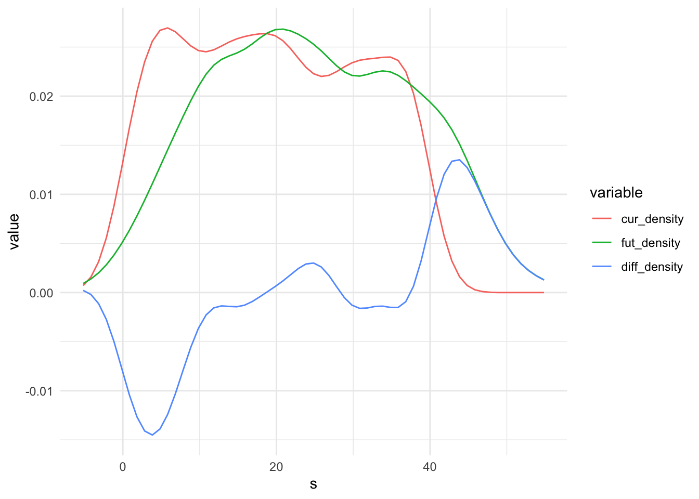
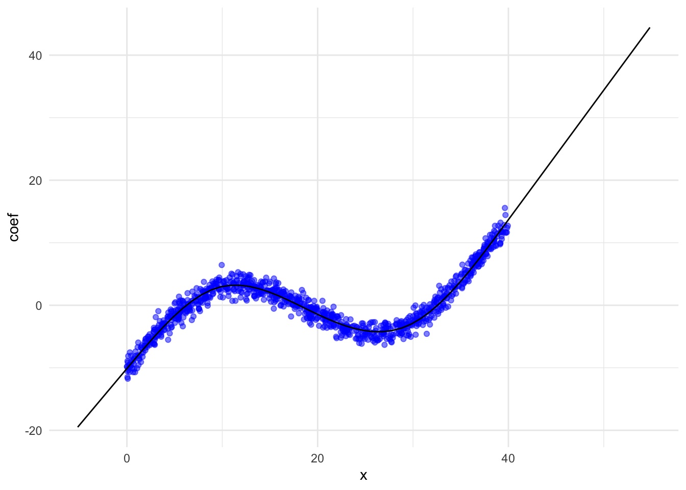

pacman::p_load(data.table, tidyverse, splints, survey, lfe, scales)Many climate-society papers project the impacts of predicted climate change on the outcome of interest (guilty!). This post include code to conduct this kind of “climate projection exercise”. The idea is to combine a dose-response function \(f(T)\) (i.e., a damage function) with an estimate of the projected shift in the distribution of climate \(\Delta g(T)\). Specifically, damages are: \[ \int^T f(t) \Delta g(t) dt \]
However, we’ll be estimating this integral numerically, because \(f(T)\) is annoying to integrate analytically and \(g(T)\) will be projected numerically. More on that later. First, import some packages
Simulate a mostly-but-not-entirely increasing sinusoidal dose-response function, where \(y\) is some outcome we care about that is affected (in a weird way) by temperature.
set.seed(42)
N <- 1000
dt <- data.table(T = runif(N, 0, 40))
dt[, y := -10 + 0.5 * T + 8 * sin(T / 6) + rnorm(N)]
ggplot(data = dt, aes(x = T, y = y)) + geom_point() + theme_minimal()
Estimate damage function
Since we normally wouldn’t know the exact functional form of the DGP, we’ll estimate \(f(T)\) with a b-spline. If you haven’t used splines before or just need a refresher, see this handy reference on using splines, and specifically why b-splines are attractive in a regression model. We’ll use a cubic spline with knots at the internal quartiles.
knots <- quantile(dt$T, probs = c(0.25, 0.5, 0.75))
boundary <- range(dt$T); degree = 3; intercept = TRUE
X <- ns(dt$T, knots = knots, Boundary.knots = boundary, intercept=intercept)
# Estimate with both felm and lm to demonstrate
fit <- felm(y ~ X - 1, data = dt)
lmfit <- lm(y ~ X - 1, data = dt)Generate climate predictions
Generate some climate predictions. Normally you’d do this by combining the output from a climate model - see Auffhammer et al (2014) for details on how to do this - but today we’ll just take the realized “weather” from above and increase it by 5 on average. Construct a sequence of equally spaced intervals that includes the range of observed and predicted temperature and create basis vectors for both. Then estimate the PDFs of the current and future distributions and take the difference between them as \(\Delta g(T)\).
dt[, T_future := T + rnorm(N, 5, 5)]
width <- 1 # Set interval for prediction: lower values = more precision (diminishing returns here)
s <- seq(min(dt[, list(T, T_future)]), max(dt[, list(T, T_future)]), width)
# Could use a histogram instead of a PDF here
densities <- data.table(s = s,
cur_density = approxfun(density(dt$T))(s),
fut_density = approxfun(density(dt$T_future))(s))
densities[is.na(cur_density), cur_density := 0]
densities[is.na(fut_density), fut_density := 0]
densities[, diff_density := fut_density - cur_density]
ggplot(data = melt(densities, id.vars = "s"), aes(x = s, y = value, colour = variable, group = variable)) +
geom_line() + theme_minimal()
Predict along interval
Xp <- ns(s, knots = knots, Boundary.knots = boundary, intercept=intercept)
colnames(Xp) <- paste0("X", colnames(Xp))Predict from felm output with svycontrast
Predict over the sequence using survey::svycontrast. This works with both lm and felm.
res.list <- list()
for (i in 1:nrow(Xp)) {
this.x <- s[i]
this.row <- c(unlist(Xp[i, ])) # Sometimes, will need to fill in values for other covariates (0s or means?), e.g. ppt
temp.dt <- as.data.table(svycontrast(fit, this.row))
temp.dt[, x:=this.x]
setnames(temp.dt, c("coef", "se", "x"))
res.list[[as.character(this.x)]] <- temp.dt
}
result_survey <- rbindlist(res.list)
ggplot(data = result_survey, aes(x = x, y = coef)) +
geom_point(data = dt, mapping = aes(x = T, y = y), colour = "blue", alpha = 0.5) +
geom_line() +
theme_minimal()
Predict from lm output with predict
Alternative to usingy survey::svycontrast loop is to do the same using predict.lm, but there is no equivalent predict.felm.
# Note the list notation here. Need to tell predict that Xp is replacing X o
result_predict <- as.data.table(predict(lmfit, newdata = list(X = Xp), se.fit = T))
result_predict[, s := s]
ggplot(data = result_predict, aes(x = s, y = fit)) +
geom_point(data = dt, mapping = aes(x = T, y = y), colour = "blue", alpha = 0.5) +
geom_line() +
theme_minimal() Compute damages
Finally, compute damages: \(\sum^T f(T) \times \Delta g(T) \times \text{interval width}\).
f <- result_survey$coef
g <- densities$diff_density
sum(f * g * width)[1] 3.370896Note that the interpretation of this sum is that it is the amount of damage at the given observational unit for this amount of climate change. So if this is a regression of, say, daily crimes in a county on temperature, then the implication is the given amount of climate change will result in this many more crimes per county per day on average. Of course, this relies on the usual assumptions about the extrapolation of the results from weather regressions to climate effects.
Substitute in different damage functions \(f(T)\) to show, for example, how different choices of fixed effects change the output. Substitute in different climate projections \(\Delta g(T)\) to show damages by region, over time, by region over time, et cetera.